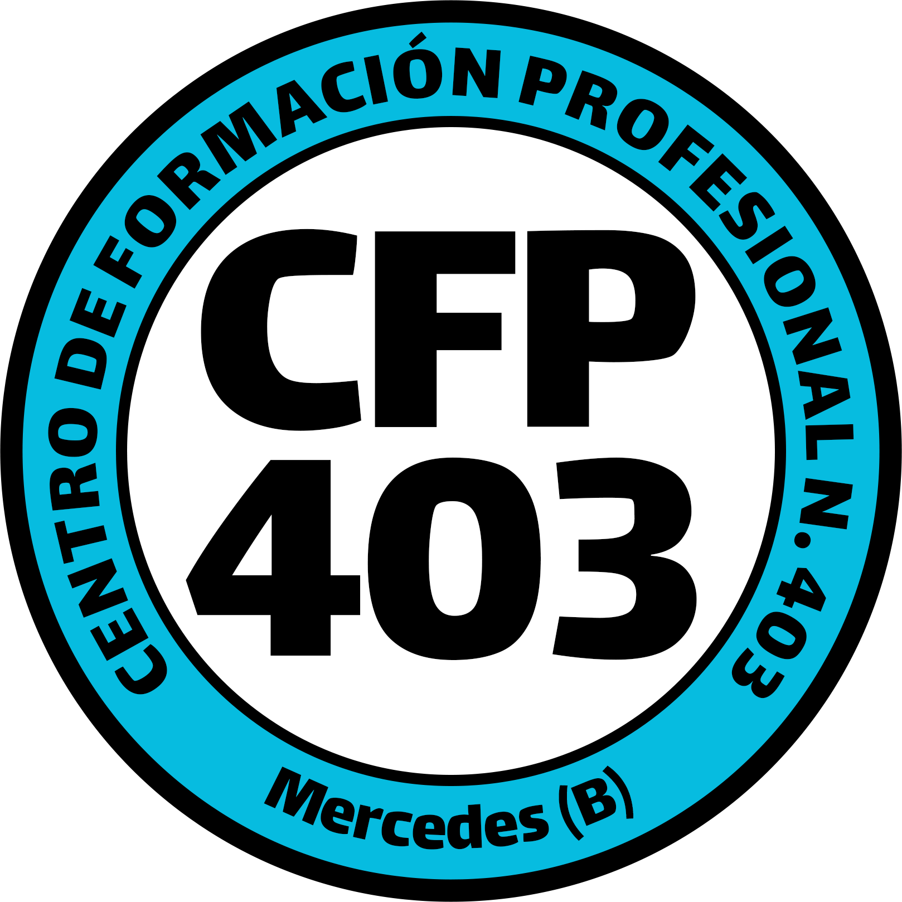

<!DOCTYPE html>
<html lang="es">

<head>
  <meta charset="UTF-8">
  <meta name="viewport" content="width=device-width, initial-scale=1.0">
  <title>Huerta Educativa Bonaerense - CFP 403 Mercedes</title>

  <!-- Tailwind CSS CDN -->
  <script src="https://cdn.tailwindcss.com"></script>

  <!-- Google Fonts: Outfit (Main) & Montserrat (Headings) -->
  <link rel="preconnect" href="https://fonts.googleapis.com">
  <link rel="preconnect" href="https://fonts.gstatic.com" crossorigin>
  <link
    href="https://fonts.googleapis.com/css2?family=Montserrat:wght@500;700;800&family=Outfit:wght@300;400;500;600;700&display=swap"
    rel="stylesheet">

  <!-- React 18 & ReactDOM 18 CDNs (No crossorigin for file:// protocol compatibility) -->
  <script src="https://unpkg.com/react@18/umd/react.production.min.js"></script>
  <script src="https://unpkg.com/react-dom@18/umd/react-dom.production.min.js"></script>

  <!-- html2canvas CDN -->
  <script src="https://cdnjs.cloudflare.com/ajax/libs/html2canvas/1.4.1/html2canvas.min.js"></script>

  <!-- Babel CDN for compiling JSX in browser (No crossorigin) -->
  <script src="https://unpkg.com/@babel/standalone/babel.min.js"></script>

  <!-- Tailwind Custom Configuration -->
  <script>
    tailwind.config = {
      theme: {
        extend: {
          fontFamily: {
            sans: ['Outfit', 'sans-serif'],
            display: ['Montserrat', 'sans-serif'],
          },
          colors: {
            tierra: {
              50: '#FAF7F2',
              100: '#F3ECE0',
              200: '#E4D5C1',
              300: '#CEB697',
              400: '#B6946F',
              500: '#9B724C',
              600: '#8A623F',
              700: '#734F31',
              800: '#5F4028',
              900: '#4D3421',
            },
            organico: {
              50: '#F2FAF3',
              100: '#E2F3E5',
              200: '#C7E7CC',
              300: '#9DD2A7',
              400: '#6CB57B',
              500: '#469858',
              600: '#347C44',
              700: '#296335',
              800: '#214F2B',
              900: '#1B4023',
            }
          }
        }
      }
    }
  </script>

  <style>
    /* Smooth transitions and custom scrollbars */
    html {
      scroll-behavior: smooth;
    }

    ::-webkit-scrollbar {
      width: 8px;
    }

    ::-webkit-scrollbar-track {
      background: #F3ECE0;
    }

    ::-webkit-scrollbar-thumb {
      background: #B6946F;
      border-radius: 4px;
    }

    ::-webkit-scrollbar-thumb:hover {
      background: #9B724C;
    }

    /* Grass wind sway keyframes */
    @keyframes sway {

      0%,
      100% {
        transform: rotate(0deg);
      }

      50% {
        transform: rotate(3deg);
      }
    }

    .sway-animation {
      animation: sway 4s ease-in-out infinite;
      transform-origin: bottom center;
    }

    /* Custom Scrollbar for grid */
    .custom-scrollbar::-webkit-scrollbar {
      width: 8px;
      height: 8px;
    }

    .custom-scrollbar::-webkit-scrollbar-track {
      background: rgba(0, 0, 0, 0.1);
      border-radius: 8px;
    }

    .custom-scrollbar::-webkit-scrollbar-thumb {
      background: rgba(255, 255, 255, 0.3);
      border-radius: 8px;
    }

    .custom-scrollbar::-webkit-scrollbar-thumb:hover {
      background: rgba(255, 255, 255, 0.5);
    }
  </style>
</head>

<body
  class="bg-tierra-50 text-stone-800 min-h-screen flex flex-col selection:bg-organico-200 selection:text-organico-900">

  <div id="root" class="flex flex-col min-h-screen"></div>

  <script>
    Babel.registerPreset("react-classic", {
      presets: [
        [Babel.availablePresets["react"], { runtime: "classic" }]
      ]
    });
  </script>

  <!-- React Application using Babel -->
  <script type="text/babel" data-presets="react-classic">
    const { useState, useEffect } = React;

    // --- SAFE LOCAL STORAGE HELPERS (Prevents crashes in sandboxed iframe environments) ---
    const safeGetItem = (key, defaultVal) => {
      try {
        const val = localStorage.getItem(key);
        return val ? JSON.parse(val) : defaultVal;
      } catch (e) {
        console.warn("localStorage no está accesible en este entorno, usando valores por defecto.", e);
        return defaultVal;
      }
    };

    const safeSetItem = (key, value) => {
      try {
        localStorage.setItem(key, JSON.stringify(value));
      } catch (e) {
        console.warn("localStorage no está accesible, no se pudo guardar el estado.", e);
      }
    };

    // --- ICON COMPONENTS (Inline SVGs for performance and offline capability) ---
    const IconLeaf = ({ className = "w-6 h-6" }) => (
      <svg className={className} viewBox="0 0 24 24" fill="none" stroke="currentColor" strokeWidth="2" strokeLinecap="round" strokeLinejoin="round">
        <path d="M11 20A7 7 0 0 1 9.8 6.1C15.5 5 17 4.48 19 2c1 2 2 3.5 0 8.5C17 15 15 18 11 20Z" />
        <path d="M19 2c-2.26 4.33-5.27 7.14-8 10" />
      </svg>
    );
    // ... rest of the icons remain identical
    const IconSprout = ({ className = "w-6 h-6" }) => (
      <svg className={className} viewBox="0 0 24 24" fill="none" stroke="currentColor" strokeWidth="2" strokeLinecap="round" strokeLinejoin="round">
        <path d="M7 20h10" />
        <path d="M10 20c0-3.5 1-6.5 2-10" />
        <path d="M12 4c.83 1.17 2 3 2 5a3 3 0 0 1-3 3 3 3 0 0 1-3-3c0-2 1.17-3.83 2-5z" />
        <path d="M12 10c0-1.5-1-2.5-2.5-3.5" />
        <path d="M12 10c0-1.5 1-2.5 2.5-3.5" />
      </svg>
    );

    const IconBookOpen = ({ className = "w-6 h-6" }) => (
      <svg className={className} viewBox="0 0 24 24" fill="none" stroke="currentColor" strokeWidth="2" strokeLinecap="round" strokeLinejoin="round">
        <path d="M2 3h6a4 4 0 0 1 4 4v14a3 3 0 0 0-3-3H2z" />
        <path d="M22 3h-6a4 4 0 0 0-4 4v14a3 3 0 0 1 3-3h7z" />
      </svg>
    );

    const IconGrid = ({ className = "w-6 h-6" }) => (
      <svg className={className} viewBox="0 0 24 24" fill="none" stroke="currentColor" strokeWidth="2" strokeLinecap="round" strokeLinejoin="round">
        <rect width="18" height="18" x="3" y="3" rx="2" />
        <path d="M3 9h18" />
        <path d="M3 15h18" />
        <path d="M9 3v18" />
        <path d="M15 3v18" />
      </svg>
    );

    const IconTrash = ({ className = "w-5 h-5" }) => (
      <svg className={className} viewBox="0 0 24 24" fill="none" stroke="currentColor" strokeWidth="2" strokeLinecap="round" strokeLinejoin="round">
        <path d="M3 6h18" />
        <path d="M19 6v14c0 1-1 2-2 2H7c-1 0-2-1-2-2V6" />
        <path d="M8 6V4c0-1 1-2 2-2h4c1 0 2 1 2 2v2" />
      </svg>
    );

    const IconHelpCircle = ({ className = "w-6 h-6" }) => (
      <svg className={className} viewBox="0 0 24 24" fill="none" stroke="currentColor" strokeWidth="2" strokeLinecap="round" strokeLinejoin="round">
        <circle cx="12" cy="12" r="10" />
        <path d="M9.09 9a3 3 0 0 1 5.83 1c0 2-3 3-3 3" />
        <path d="M12 17h.01" />
      </svg>
    );

    const IconInfo = ({ className = "w-6 h-6" }) => (
      <svg className={className} viewBox="0 0 24 24" fill="none" stroke="currentColor" strokeWidth="2" strokeLinecap="round" strokeLinejoin="round">
        <circle cx="12" cy="12" r="10" />
        <path d="M12 16v-4" />
        <path d="M12 8h.01" />
      </svg>
    );

    const IconWater = ({ className = "w-5 h-5" }) => (
      <svg className={className} viewBox="0 0 24 24" fill="none" stroke="currentColor" strokeWidth="2" strokeLinecap="round" strokeLinejoin="round">
        <path d="M12 22a7 7 0 0 0 7-7c0-4.3-7-11-7-11S5 10.7 5 15a7 7 0 0 0 7 7z" />
      </svg>
    );

    const IconThermometer = ({ className = "w-6 h-6" }) => (
      <svg className={className} viewBox="0 0 24 24" fill="none" stroke="currentColor" strokeWidth="2" strokeLinecap="round" strokeLinejoin="round">
        <path d="M14 14.76V3.5a2.5 2.5 0 0 0-5 0v11.26a4.5 4.5 0 1 0 5 0z" />
      </svg>
    );

    const IconHome = ({ className = "w-6 h-6" }) => (
      <svg className={className} viewBox="0 0 24 24" fill="none" stroke="currentColor" strokeWidth="2" strokeLinecap="round" strokeLinejoin="round">
        <path d="m3 9 9-7 9 7v11a2 2 0 0 1-2 2H5a2 2 0 0 1-2-2z" />
        <polyline points="9 22 9 12 15 12 15 22" />
      </svg>
    );

    const IconSun = ({ className = "w-6 h-6" }) => (
      <svg className={className} viewBox="0 0 24 24" fill="none" stroke="currentColor" strokeWidth="2" strokeLinecap="round" strokeLinejoin="round">
        <circle cx="12" cy="12" r="4" />
        <path d="M12 2v2" />
        <path d="M12 20v2" />
        <path d="m4.93 4.93 1.41 1.41" />
        <path d="m17.66 17.66 1.41 1.41" />
        <path d="M2 12h2" />
        <path d="M20 12h2" />
        <path d="m6.34 17.66-1.41 1.41" />
        <path d="m19.07 4.93-1.41 1.41" />
      </svg>
    );

    const IconMenu = ({ className = "w-6 h-6" }) => (
      <svg className={className} viewBox="0 0 24 24" fill="none" stroke="currentColor" strokeWidth="2" strokeLinecap="round" strokeLinejoin="round">
        <line x1="4" x2="20" y1="12" y2="12" />
        <line x1="4" x2="20" y1="6" y2="6" />
        <line x1="4" x2="20" y1="18" y2="18" />
      </svg>
    );

    const IconX = ({ className = "w-6 h-6" }) => (
      <svg className={className} viewBox="0 0 24 24" fill="none" stroke="currentColor" strokeWidth="2" strokeLinecap="round" strokeLinejoin="round">
        <path d="M18 6 6 18" />
        <path d="m6 6 12 12" />
      </svg>
    );

    // --- MAIN APPLICATION COMPONENT ---
    function App() {
      const [currentView, setCurrentView] = useState("inicio");
      const [mobileMenuOpen, setMobileMenuOpen] = useState(false);

      // --- SIMULADOR DE HUERTA STATE & DATA ---
      const [huertaWidth, setHuertaWidth] = useState(6);
      const [huertaHeight, setHuertaHeight] = useState(4);
      const [entornoEstacion, setEntornoEstacion] = useState("Primavera/Verano");
      const [entornoSol, setEntornoSol] = useState("Mucho");
      const [resultadoSimulacion, setResultadoSimulacion] = useState("");

      const getInitialGrid = (w, h) => Array(w * h).fill(null);

      const [huertaGrid, setHuertaGrid] = useState(() => getInitialGrid(6, 4));

      const [selectedPlant, setSelectedPlant] = useState(null);


      const plantasDisponibles = [
        { id: "tomate", nombre: "Tomate", familia: "Solanáceas", emoji: "🍅", color: "bg-red-100 border-red-300 text-red-800", estacion: "Primavera/Verano", sol: "Mucho", repelente: false, mejoraSuelo: false, asociacion: { buenas: ["albahaca", "cebolla", "ajo", "calendula"], malas: ["zapallo", "papa"] }, desc: "Crece mejor con tutores." },
        { id: "pimiento", nombre: "Pimiento", familia: "Solanáceas", emoji: "🫑", color: "bg-red-50 border-red-200 text-red-700", estacion: "Primavera/Verano", sol: "Mucho", repelente: false, mejoraSuelo: false, asociacion: { buenas: ["albahaca", "zanahoria"], malas: [] }, desc: "Requiere calor constante." },
        { id: "berenjena", nombre: "Berenjena", familia: "Solanáceas", emoji: "🍆", color: "bg-purple-100 border-purple-300 text-purple-800", estacion: "Primavera/Verano", sol: "Mucho", repelente: false, mejoraSuelo: false, asociacion: { buenas: ["porotos", "albahaca"], malas: [] }, desc: "Muy exigente en nutrientes." },
        { id: "papa", nombre: "Papa", familia: "Solanáceas", emoji: "🥔", color: "bg-stone-200 border-stone-400 text-stone-800", estacion: "Otoño/Invierno", sol: "Medio", repelente: false, mejoraSuelo: false, asociacion: { buenas: ["habas", "arvejas"], malas: ["tomate", "zapallo"] }, desc: "Cultivo de raíz, necesita suelo suelto." },

        { id: "lechuga", nombre: "Lechuga", familia: "Compuestas", emoji: "🥬", color: "bg-green-100 border-green-300 text-green-800", estacion: "Todo el año", sol: "Medio", repelente: false, mejoraSuelo: false, asociacion: { buenas: ["zanahoria", "cebolla", "ajo"], malas: [] }, desc: "Ideal para todo el año." },
        { id: "calendula", nombre: "Caléndula", familia: "Compuestas", emoji: "🌼", color: "bg-yellow-100 border-yellow-300 text-yellow-800", estacion: "Todo el año", sol: "Mucho", repelente: true, mejoraSuelo: false, asociacion: { buenas: ["tomate", "zapallo"], malas: [] }, desc: "Atrae insectos benéficos y repele nematodos." },
        { id: "girasol", nombre: "Girasol", familia: "Compuestas", emoji: "🌻", color: "bg-yellow-200 border-yellow-400 text-yellow-900", estacion: "Primavera/Verano", sol: "Mucho", repelente: false, mejoraSuelo: false, asociacion: { buenas: ["zapallo", "porotos"], malas: ["papa"] }, desc: "Gran atractor de polinizadores." },

        { id: "zanahoria", nombre: "Zanahoria", familia: "Umbelíferas", emoji: "🥕", color: "bg-orange-100 border-orange-300 text-orange-800", estacion: "Todo el año", sol: "Medio", repelente: false, mejoraSuelo: false, asociacion: { buenas: ["lechuga", "cebolla", "puerro"], malas: [] }, desc: "Raíz profunda, requiere suelo arenoso." },
        { id: "perejil", nombre: "Perejil", familia: "Umbelíferas", emoji: "🌿", color: "bg-green-50 border-green-200 text-green-700", estacion: "Todo el año", sol: "Medio", repelente: false, mejoraSuelo: false, asociacion: { buenas: ["tomate", "zanahoria"], malas: [] }, desc: "Aromática de crecimiento lento al inicio." },
        { id: "hinojo", nombre: "Hinojo", familia: "Umbelíferas", emoji: "🌿", color: "bg-emerald-50 border-emerald-200 text-emerald-700", estacion: "Otoño/Invierno", sol: "Mucho", repelente: false, mejoraSuelo: false, asociacion: { buenas: [], malas: ["tomate", "porotos"] }, desc: "Suele alelopatizar (inhibir) el crecimiento de vecinas." },

        { id: "cebolla", nombre: "Cebolla", familia: "Liliáceas", emoji: "🧅", color: "bg-purple-100 border-purple-300 text-purple-800", estacion: "Otoño/Invierno", sol: "Mucho", repelente: false, mejoraSuelo: false, asociacion: { buenas: ["zanahoria", "tomate", "lechuga"], malas: ["arvejas", "habas", "porotos"] }, desc: "Buen repelente general de plagas." },
        { id: "ajo", nombre: "Ajo", familia: "Liliáceas", emoji: "🧄", color: "bg-stone-100 border-stone-300 text-stone-700", estacion: "Otoño/Invierno", sol: "Medio", repelente: true, mejoraSuelo: false, asociacion: { buenas: ["tomate", "zanahoria", "lechuga"], malas: ["arvejas", "habas", "porotos"] }, desc: "Poderoso fungicida y repelente natural." },
        { id: "puerro", nombre: "Puerro", familia: "Liliáceas", emoji: "🥬", color: "bg-green-100 border-green-300 text-green-800", estacion: "Otoño/Invierno", sol: "Medio", repelente: false, mejoraSuelo: false, asociacion: { buenas: ["zanahoria"], malas: ["arvejas", "habas"] }, desc: "Soporta muy bien el frío intenso." },

        { id: "brocoli", nombre: "Brócoli", familia: "Crucíferas", emoji: "🥦", color: "bg-emerald-100 border-emerald-300 text-emerald-800", estacion: "Otoño/Invierno", sol: "Medio", repelente: false, mejoraSuelo: false, asociacion: { buenas: ["cebolla", "papa", "romero"], malas: ["tomate"] }, desc: "Exigente en nitrógeno." },
        { id: "coliflor", nombre: "Coliflor", familia: "Crucíferas", emoji: "🥦", color: "bg-emerald-50 border-emerald-200 text-emerald-700", estacion: "Otoño/Invierno", sol: "Medio", repelente: false, mejoraSuelo: false, asociacion: { buenas: ["cebolla", "papa"], malas: ["tomate"] }, desc: "Requiere suelo bien abonado." },
        { id: "rabanito", nombre: "Rabanito", familia: "Crucíferas", emoji: "🔴", color: "bg-red-100 border-red-300 text-red-800", estacion: "Todo el año", sol: "Medio", repelente: false, mejoraSuelo: false, asociacion: { buenas: ["lechuga", "zanahoria", "arvejas"], malas: [] }, desc: "Cosecha súper rápida (30 días)." },
        { id: "repollo", nombre: "Repollo", familia: "Crucíferas", emoji: "🥬", color: "bg-green-200 border-green-400 text-green-900", estacion: "Otoño/Invierno", sol: "Medio", repelente: false, mejoraSuelo: false, asociacion: { buenas: ["cebolla", "papa"], malas: ["tomate", "porotos"] }, desc: "Ocupa gran volumen." },

        { id: "zapallo", nombre: "Zapallo", familia: "Cucurbitáceas", emoji: "🎃", color: "bg-amber-100 border-amber-300 text-amber-800", estacion: "Primavera/Verano", sol: "Mucho", repelente: false, mejoraSuelo: false, asociacion: { buenas: ["porotos", "girasol"], malas: ["papa"] }, desc: "Requiere mucho espacio." },
        { id: "calabacin", nombre: "Calabacín", familia: "Cucurbitáceas", emoji: "🥒", color: "bg-green-100 border-green-300 text-green-800", estacion: "Primavera/Verano", sol: "Mucho", repelente: false, mejoraSuelo: false, asociacion: { buenas: ["porotos"], malas: ["papa"] }, desc: "Gran productor en verano." },
        { id: "pepino", nombre: "Pepino", familia: "Cucurbitáceas", emoji: "🥒", color: "bg-emerald-100 border-emerald-300 text-emerald-800", estacion: "Primavera/Verano", sol: "Mucho", repelente: false, mejoraSuelo: false, asociacion: { buenas: ["porotos", "girasol"], malas: ["papa", "tomate"] }, desc: "Necesita tutor para trepar." },

        { id: "arvejas", nombre: "Arvejas", familia: "Leguminosas", emoji: "🫛", color: "bg-lime-100 border-lime-300 text-lime-800", estacion: "Otoño/Invierno", sol: "Medio", repelente: false, mejoraSuelo: true, asociacion: { buenas: ["zanahoria", "rabanito"], malas: ["ajo", "cebolla", "puerro"] }, desc: "Fijadora de nitrógeno." },
        { id: "habas", nombre: "Habas", familia: "Leguminosas", emoji: "🫘", color: "bg-lime-200 border-lime-400 text-lime-900", estacion: "Otoño/Invierno", sol: "Medio", repelente: false, mejoraSuelo: true, asociacion: { buenas: ["papa"], malas: ["ajo", "cebolla", "puerro"] }, desc: "Fijadora de nitrógeno. Planta robusta." },
        { id: "porotos", nombre: "Porotos", familia: "Leguminosas", emoji: "🫘", color: "bg-orange-50 border-orange-200 text-orange-700", estacion: "Primavera/Verano", sol: "Mucho", repelente: false, mejoraSuelo: true, asociacion: { buenas: ["zapallo", "berenjena"], malas: ["ajo", "cebolla", "hinojo"] }, desc: "Excelente para asociar." },

        { id: "albahaca", nombre: "Albahaca", familia: "Lamiáceas", emoji: "🌿", color: "bg-emerald-100 border-emerald-300 text-emerald-800", estacion: "Primavera/Verano", sol: "Mucho", repelente: true, mejoraSuelo: false, asociacion: { buenas: ["tomate", "pimiento"], malas: [] }, desc: "Repelente de mosca blanca y pulgones." },
        { id: "romero", nombre: "Romero", familia: "Lamiáceas", emoji: "🌿", color: "bg-stone-200 border-stone-400 text-stone-800", estacion: "Todo el año", sol: "Mucho", repelente: true, mejoraSuelo: false, asociacion: { buenas: ["brocoli", "repollo", "zanahoria"], malas: [] }, desc: "Planta perenne, repele insectos varios." },
        { id: "menta", nombre: "Menta", familia: "Lamiáceas", emoji: "🍃", color: "bg-green-100 border-green-300 text-green-800", estacion: "Todo el año", sol: "Medio", repelente: true, mejoraSuelo: false, asociacion: { buenas: ["tomate", "repollo"], malas: [] }, desc: "Muy invasiva, repele hormigas y pulgones." }
      ];

      const plantasFiltradas = plantasDisponibles.filter(p => p.estacion === entornoEstacion || p.estacion === "Todo el año");

      const handleCellClick = (index) => {
        const newGrid = [...huertaGrid];
        if (newGrid[index] && !selectedPlant) {
          // Desmalezar / Cosechar
          newGrid[index] = null;
        } else if (selectedPlant) {
          // Plantar (siempre se planta 'sana' por defecto)
          newGrid[index] = { id: selectedPlant, salud: "sana" };
        }
        setHuertaGrid(newGrid);
        setResultadoSimulacion("");
      };

      
      const descargarMapa = () => {
        const gridElement = document.getElementById('huerta-map');
        if (!gridElement) return;
        
        // Agregar un color de fondo para la imagen
        const originalBg = gridElement.style.backgroundColor;
        gridElement.style.backgroundColor = '#4e331c'; // tierra-800
        
        window.html2canvas(gridElement, { scale: 2 }).then(canvas => {
          gridElement.style.backgroundColor = originalBg;
          const link = document.createElement('a');
          link.download = 'mapa_huerta_escolar.png';
          link.href = canvas.toDataURL();
          link.click();
        });
      };

      const clearGrid = () => {
        if (confirm("¿Estás seguro de que quieres limpiar toda la huerta?")) {
          setHuertaGrid(getInitialGrid(huertaWidth, huertaHeight));
          setResultadoSimulacion("");
        }
      };

      const resizeGrid = (newWidth, newHeight) => {
        if (confirm("Al cambiar las dimensiones, la huerta se limpiará por completo. ¿Deseas continuar?")) {
          setHuertaWidth(newWidth);
          setHuertaHeight(newHeight);
          setHuertaGrid(getInitialGrid(newWidth, newHeight));
          setResultadoSimulacion("");
        }
      };

      const getVecinos = (index, cols, rows) => {
        const vecinos = [];
        const x = index % cols;
        const y = Math.floor(index / cols);

        for (let dy = -1; dy <= 1; dy++) {
          for (let dx = -1; dx <= 1; dx++) {
            if (dx === 0 && dy === 0) continue;
            const nx = x + dx;
            const ny = y + dy;
            if (nx >= 0 && nx < cols && ny >= 0 && ny < rows) {
              vecinos.push(ny * cols + nx);
            }
          }
        }
        return vecinos;
      };

      const simularCrecimientoHuerta = () => {
        let stats = { marchitas: 0, plagas: 0, optimas: 0, sanas: 0 };
        const cols = parseInt(huertaWidth);
        const rows = parseInt(huertaHeight);

        const newGrid = huertaGrid.map((celda, i) => {
          if (!celda) return null;

          const def = plantasDisponibles.find(p => p.id === celda.id);
          if (!def) return celda;

          let nuevaSalud = "sana";

          // 1. Falta de sol
          if (def.sol === "Mucho" && entornoSol === "Poco") {
            nuevaSalud = "marchita";
            stats.marchitas++;
            return { ...celda, salud: nuevaSalud };
          }

          // 2. Estación incompatible (si no es Todo el año y no coincide)
          if (def.estacion !== "Todo el año" && def.estacion !== entornoEstacion) {
            nuevaSalud = "marchita";
            stats.marchitas++;
            return { ...celda, salud: nuevaSalud };
          }

          const vecinosIdx = getVecinos(i, cols, rows);
          const vecinosIds = vecinosIdx.map(idx => huertaGrid[idx]?.id).filter(id => id);
          const vecinosDefs = vecinosIds.map(vid => plantasDisponibles.find(p => p.id === vid)).filter(d => d);

          const tieneRepelenteCerca = vecinosDefs.some(v => v.repelente);
          const mismaFamilia = vecinosDefs.filter(v => v.familia === def.familia).length;
          const tieneAsociacionBuena = vecinosDefs.some(v => def.asociacion.buenas.includes(v.id));

          // 3. Plagas (Ataque)
          // Si está rodeado de 1 o más plantas de la misma familia y no hay repelentes
          if (mismaFamilia > 0 && !tieneRepelenteCerca) {
            nuevaSalud = "plaga";
            stats.plagas++;
          }
          // 4. Prosperidad
          else if (tieneAsociacionBuena) {
            nuevaSalud = "optima";
            stats.optimas++;
          } else {
            stats.sanas++;
          }

          return { ...celda, salud: nuevaSalud };
        });

        setHuertaGrid(newGrid);

        // Generar resumen
        let total = stats.marchitas + stats.plagas + stats.optimas + stats.sanas;
        if (total === 0) {
          setResultadoSimulacion("No hay semillas plantadas para simular.");
          return;
        }

        let msgs = [];
        if (stats.marchitas > 0) msgs.push(`${stats.marchitas} planta(s) se marchitaron por clima/sol inadecuado`);
        if (stats.plagas > 0) msgs.push(`${stats.plagas} planta(s) sufrieron plagas por falta de biodiversidad`);
        if (stats.optimas > 0) msgs.push(`${stats.optimas} planta(s) prosperaron gracias a buenas asociaciones`);

        if (msgs.length === 0) {
          setResultadoSimulacion("Las plantas crecieron sanas, pero sin asociaciones destacables.");
        } else {
          setResultadoSimulacion(msgs.join(". ") + ".");
        }
      };

      // --- SIMULADOR DE COMPOST STATE ---
      const [compostItems, setCompostItems] = useState([]);
      const [compostHumedad, setCompostHumedad] = useState(50);
      const [compostOxigeno, setCompostOxigeno] = useState(100);
      const [totalN, setTotalN] = useState(0); // Nitrógeno (Húmedos)
      const [totalC, setTotalC] = useState(0); // Carbono (Secos)
      const [compostMensaje, setCompostMensaje] = useState("Agrega ingredientes a la compostera y avanza un mes para evaluar el resultado.");
      const [compostEstado, setCompostEstado] = useState("neutro"); // neutro, premium, lento, putrefacto, estructural

      const agregarItem = (nombre, tipo, n, c, hum, emoji) => {
        if (compostItems.length >= 60) {
          alert("¡La compostera está llena! Avanzá el tiempo para ver resultados.");
          return;
        }
        setCompostItems(prev => [...prev, { id: Date.now() + Math.random(), nombre, tipo, emoji }]);
        setTotalN(prev => prev + n);
        setTotalC(prev => prev + c);
        setCompostHumedad(prev => Math.min(100, Math.max(0, prev + hum * 5))); // Escalar humedad un poco
        setCompostOxigeno(prev => Math.max(0, prev - 10)); // Baja oxígeno al agregar materia nueva
      };

      const regarCompost = () => {
        setCompostHumedad(prev => Math.min(100, prev + 20));
      };

      const voltearCompost = () => {
        setCompostOxigeno(100);
        // Mezclar visualmente
        setCompostItems(prev => [...prev].sort(() => Math.random() - 0.5));
      };

      const avanzarMes = () => {
        if (totalN === 0 && totalC === 0) {
          setCompostMensaje("La compostera está vacía. Agrega ingredientes primero.");
          setCompostEstado("neutro");
          return;
        }

        const n = totalN || 0.01;
        const ratioCN = totalC / n;

        // Bajan las variables por el paso del tiempo
        const nuevaHumedad = Math.max(0, compostHumedad - 20);
        const nuevoOxigeno = Math.max(0, compostOxigeno - 30);

        setCompostHumedad(nuevaHumedad);
        setCompostOxigeno(nuevoOxigeno);

        if (ratioCN < 1.2 && nuevaHumedad > 65 && nuevoOxigeno < 35) {
          // Lodo Putrefacto
          setCompostMensaje("¡Un desastre! Al no voltearlo y pasarte de humedad (exceso de verdes), la mezcla se pudrió y generó mal olor. Esta tierra es ácida y no sirve para sembrar.");
          setCompostEstado("putrefacto");
        } else if (ratioCN >= 1.5 && ratioCN <= 2.8 && nuevaHumedad >= 40 && nuevaHumedad <= 65 && nuevoOxigeno >= 40) {
          // Premium
          setCompostMensaje("¡Perfecto! Creaste un abono premium, rico en nutrientes y listo para la huerta. Lograste el balance ideal de Carbono y Nitrógeno.");
          setCompostEstado("premium");
        } else if (ratioCN > 3 && nuevaHumedad < 35) {
          // Lento y pobre
          setCompostMensaje("El proceso fue muy lento. Te faltó regar y agregar restos de cocina. Obtuviste un compost a medio hacer.");
          setCompostEstado("lento");
        } else if (ratioCN > 3 && nuevaHumedad >= 35) {
          // Estructural
          setCompostMensaje("Tierra aceptable, pero tardará mucho en deshacer los cartones y hojas. ¡Mezcla más material verde la próxima vez!");
          setCompostEstado("estructural");
        } else {
          // Genérico si no cae en los extremos
          if (nuevaHumedad > 70) {
            setCompostMensaje("El compost quedó muy húmedo y apelmazado. Te faltó material seco o voltearlo más.");
            setCompostEstado("putrefacto");
          } else {
            setCompostMensaje("Obtuviste un compost de calidad media. Seguí practicando las proporciones 2 a 1 y manteniendo la humedad a la mitad.");
            setCompostEstado("estructural");
          }
        }

        // Limpiar para mostrar el fondo de tierra
        setCompostItems([]);
      };

      const reiniciarCompost = () => {
        if (confirm("¿Reiniciar la compostera?")) {
          setCompostItems([]);
          setTotalN(0);
          setTotalC(0);
          setCompostHumedad(50);
          setCompostOxigeno(100);
          setCompostMensaje("Agrega ingredientes a la compostera y avanza un mes para evaluar el resultado.");
          setCompostEstado("neutro");
        }
      };

      // --- APRENDER SECTION STATE ---
      const [activeAprenderTab, setActiveAprenderTab] = useState("pilares");


      // --- IMAGE SLIDER COMPONENT ---
      const ImageSlider = ({ images }) => {
        const [currentIndex, setCurrentIndex] = useState(0);

        useEffect(() => {
          const timer = setInterval(() => {
            setCurrentIndex((prev) => (prev + 1) % images.length);
          }, 4000);
          return () => clearInterval(timer);
        }, [images.length]);

        return (
          <div className="relative w-full h-72 sm:h-96 rounded-2xl overflow-hidden shadow-lg border border-stone-200 group">
            {images.map((src, index) => (
               { e.target.onerror = null; e.target.src = "https://via.placeholder.com/800x600/e2e8f0/64748b?text=Falta+Imagen+" + src.replace('./', ''); }}
              />
            ))}
            <div className="absolute bottom-4 left-0 right-0 flex justify-center space-x-2 z-10">
              {images.map((_, index) => (
                <button
                  key={index}
                  onClick={() => setCurrentIndex(index)}
                  className={`w-2.5 h-2.5 rounded-full transition-colors ${index === currentIndex ? "bg-white" : "bg-white/50 hover:bg-white/75 shadow"}`}
                />
              ))}
            </div>
          </div>
        );
      };

      // --- ARRAYS DE IMAGENES PARA SLIDERS ---
      const imgsPilares = ["./pilares1.jpg", "./pilares2.jpg", "./pilares3.jpg", "./pilares4.jpg", "./pilares5.jpg"];
      const imgsAbono = ["./abono1.jpg", "./abono2.jpg", "./abono3.jpg", "./abono4.jpg", "./abono5.jpg"];
      const imgsAsociaciones = ["./asociaciones1.jpg", "./asociaciones2.jpg", "./asociaciones3.jpg", "./asociaciones4.jpg", "./asociaciones5.jpg"];

      return (
        <div className="flex-grow flex flex-col">

          {/* --- STICKY GLASSMORPHIC NAVBAR --- */}
          <header className="sticky top-0 z-50 bg-white/90 backdrop-blur-md border-b border-tierra-200/60 shadow-sm transition-all">
            <div className="max-w-7xl mx-auto px-4 sm:px-6 lg:px-8">
              <div className="flex items-center justify-between h-20">

                {/* Brand / Logos */}
                <div className="flex items-center space-x-4 cursor-pointer" onClick={() => setCurrentView("inicio")}>
                  {/* Logo Provincia */}
                   e.target.style.display = 'none'} />
                  {/* Separador */}
                  <div className="hidden sm:block h-8 w-px bg-stone-300"></div>
                  {/* Logo CFP */}
                   { e.target.onerror = null; e.target.src = "data:image/svg+xml,%3Csvg xmlns='http://www.w3.org/2000/svg' fill='none' viewBox='0 0 24 24' stroke='currentColor'%3E%3Cpath stroke-linecap='round' stroke-linejoin='round' stroke-width='2' d='M5 3v4M3 5h4M6 17v4m-2-2h4m5-16l2.286 6.857L21 12l-5.714 2.143L13 21l-2.286-6.857L5 12l5.714-2.143L13 3z'/%3E%3C/svg%3E"; }} />

                  <div>
                    <h1 className="font-display font-extrabold text-xl sm:text-2xl text-stone-900 tracking-tight leading-none">
                      Huerta Educativa <span className="text-organico-600 font-medium block sm:inline text-lg sm:text-2xl">Bonaerense</span>
                    </h1>
                  </div>
                </div>

                {/* Desktop Navigation Links */}
                <nav className="hidden md:flex space-x-1">
                  {[
                    { id: "inicio", label: "Inicio", icon: <IconHome className="w-4 h-4 mr-1.5" /> },
                    { id: "aprender", label: "Aprender", icon: <IconBookOpen className="w-4 h-4 mr-1.5" /> },
                    { id: "simulador_huerta", label: "Simulador Huerta", icon: <IconGrid className="w-4 h-4 mr-1.5" /> },
                    { id: "simulador_compost", label: "Simulador Compost", icon: <IconSprout className="w-4 h-4 mr-1.5" /> },
                    { id: "sobre", label: "Sobre el Proyecto", icon: <IconInfo className="w-4 h-4 mr-1.5" /> }
                  ].map(tab => (
                    <button
                      key={tab.id}
                      onClick={() => setCurrentView(tab.id)}
                      className={`flex items-center px-4 py-2.5 rounded-xl text-sm font-semibold transition-all duration-300 ${currentView === tab.id
                        ? "bg-organico-600 text-white shadow-md shadow-organico-700/20"
                        : "text-stone-600 hover:bg-tierra-100 hover:text-stone-900"
                        }`}
                    >
                      {tab.icon}
                      {tab.label}
                    </button>
                  ))}
                </nav>

                <div className="hidden md:flex items-center ml-2">
                  <a href="https://www.instagram.com/cfp_mercedes/" target="_blank" rel="noopener noreferrer" className="p-2 text-pink-600 hover:text-pink-700 bg-pink-50 hover:bg-pink-100 rounded-full transition-colors shadow-sm" title="Seguinos en Instagram">
                    <svg className="w-5 h-5" fill="currentColor" viewBox="0 0 24 24" aria-hidden="true">
                      <path fillRule="evenodd" d="M12.315 2c2.43 0 2.784.013 3.808.06 1.064.049 1.791.218 2.427.465a4.902 4.902 0 011.772 1.153 4.902 4.902 0 011.153 1.772c.247.636.416 1.363.465 2.427.048 1.067.06 1.407.06 4.123v.08c0 2.643-.012 2.987-.06 4.043-.049 1.064-.218 1.791-.465 2.427a4.902 4.902 0 01-1.153 1.772 4.902 4.902 0 01-1.772 1.153c-.636.247-1.363.416-2.427.465-1.067.048-1.407.06-4.123.06h-.08c-2.643 0-2.987-.012-4.043-.06-1.064-.049-1.791-.218-2.427-.465a4.902 4.902 0 01-1.772-1.153 4.902 4.902 0 01-1.153-1.772c-.247-.636-.416-1.363-.465-2.427-.047-1.024-.06-1.379-.06-3.808v-.63c0-2.43.013-2.784.06-3.808.049-1.064.218-1.791.465-2.427a4.902 4.902 0 011.153-1.772A4.902 4.902 0 015.45 2.525c.636-.247 1.363-.416 2.427-.465C8.901 2.013 9.256 2 11.685 2h.63zm-.081 1.802h-.468c-2.456 0-2.784.011-3.807.058-.975.045-1.504.207-1.857.344-.467.182-.8.398-1.15.748-.35.35-.566.683-.748 1.15-.137.353-.3.882-.344 1.857-.047 1.023-.058 1.351-.058 3.807v.468c0 2.456.011 2.784.058 3.807.045.975.207 1.504.344 1.857.182.466.399.8.748 1.15.35.35.683.566 1.15.748.353.137.882.3 1.857.344 1.054.048 1.37.058 4.041.058h.08c2.597 0 2.917-.01 3.96-.058.976-.045 1.505-.207 1.858-.344.466-.182.8-.398 1.15-.748.35-.35.566-.683.748-1.15.137-.353.3-.882.344-1.857.048-1.055.058-1.37.058-4.041v-.08c0-2.597-.01-2.917-.058-3.96-.045-.976-.207-1.505-.344-1.858a3.097 3.097 0 00-.748-1.15 3.098 3.098 0 00-1.15-.748c-.353-.137-.882-.3-1.857-.344-1.023-.047-1.351-.058-3.807-.058zM12 6.865a5.135 5.135 0 110 10.27 5.135 5.135 0 010-10.27zm0 1.802a3.333 3.333 0 100 6.666 3.333 3.333 0 000-6.666zm5.338-3.205a1.2 1.2 0 110 2.4 1.2 1.2 0 010-2.4z" clipRule="evenodd" />
                    </svg>
                  </a>
                </div>

                {/* Mobile Menu Button */}
                <div className="flex md:hidden">
                  <button
                    onClick={() => setMobileMenuOpen(!mobileMenuOpen)}
                    className="p-2 rounded-xl text-stone-600 hover:bg-tierra-100 hover:text-stone-900 focus:outline-none transition-colors"
                  >
                    {mobileMenuOpen ? <IconX className="w-6 h-6" /> : <IconMenu className="w-6 h-6" />}
                  </button>
                </div>

              </div>
            </div>

            {/* Mobile Navigation Menu Dropdown */}
            {mobileMenuOpen && (
              <div className="md:hidden bg-tierra-50 border-b border-tierra-200 px-4 pt-2 pb-4 space-y-1.5 animate-fadeIn">
                {[
                  { id: "inicio", label: "Inicio", icon: <IconHome className="w-5 h-5 mr-3" /> },
                  { id: "aprender", label: "Aprender (Guía)", icon: <IconBookOpen className="w-5 h-5 mr-3" /> },
                  { id: "simulador_huerta", label: "Simulador de Huerta", icon: <IconGrid className="w-5 h-5 mr-3" /> },
                  { id: "simulador_compost", label: "Simulador de Compost", icon: <IconSprout className="w-5 h-5 mr-3" /> },
                  { id: "sobre", label: "Sobre el Proyecto", icon: <IconInfo className="w-5 h-5 mr-3" /> }
                ].map(tab => (
                  <button
                    key={tab.id}
                    onClick={() => {
                      setCurrentView(tab.id);
                      setMobileMenuOpen(false);
                    }}
                    className={`flex items-center w-full px-4 py-3 rounded-xl text-base font-semibold transition-all ${currentView === tab.id
                      ? "bg-organico-600 text-white shadow-md"
                      : "text-stone-600 hover:bg-tierra-100"
                      }`}
                  >
                    {tab.icon}
                    {tab.label}
                  </button>
                ))}
                
                <div className="px-4 pt-2 pb-1 border-t border-tierra-200/50 mt-2">
                  <a
                    href="https://www.instagram.com/cfp_mercedes/"
                    target="_blank"
                    rel="noopener noreferrer"
                    className="flex items-center justify-center w-full px-4 py-3 rounded-xl text-sm font-bold transition-all text-pink-700 bg-pink-100 hover:bg-pink-200 border border-pink-200 shadow-sm"
                  >
                    <svg className="w-5 h-5 mr-2" fill="currentColor" viewBox="0 0 24 24" aria-hidden="true">
                      <path fillRule="evenodd" d="M12.315 2c2.43 0 2.784.013 3.808.06 1.064.049 1.791.218 2.427.465a4.902 4.902 0 011.772 1.153 4.902 4.902 0 011.153 1.772c.247.636.416 1.363.465 2.427.048 1.067.06 1.407.06 4.123v.08c0 2.643-.012 2.987-.06 4.043-.049 1.064-.218 1.791-.465 2.427a4.902 4.902 0 01-1.153 1.772 4.902 4.902 0 01-1.772 1.153c-.636.247-1.363.416-2.427.465-1.067.048-1.407.06-4.123.06h-.08c-2.643 0-2.987-.012-4.043-.06-1.064-.049-1.791-.218-2.427-.465a4.902 4.902 0 01-1.772-1.153 4.902 4.902 0 01-1.153-1.772c-.247-.636-.416-1.363-.465-2.427-.047-1.024-.06-1.379-.06-3.808v-.63c0-2.43.013-2.784.06-3.808.049-1.064.218-1.791.465-2.427a4.902 4.902 0 011.153-1.772A4.902 4.902 0 015.45 2.525c.636-.247 1.363-.416 2.427-.465C8.901 2.013 9.256 2 11.685 2h.63zm-.081 1.802h-.468c-2.456 0-2.784.011-3.807.058-.975.045-1.504.207-1.857.344-.467.182-.8.398-1.15.748-.35.35-.566.683-.748 1.15-.137.353-.3.882-.344 1.857-.047 1.023-.058 1.351-.058 3.807v.468c0 2.456.011 2.784.058 3.807.045.975.207 1.504.344 1.857.182.466.399.8.748 1.15.35.35.683.566 1.15.748.353.137.882.3 1.857.344 1.054.048 1.37.058 4.041.058h.08c2.597 0 2.917-.01 3.96-.058.976-.045 1.505-.207 1.858-.344.466-.182.8-.398 1.15-.748.35-.35.566-.683.748-1.15.137-.353.3-.882.344-1.857.048-1.055.058-1.37.058-4.041v-.08c0-2.597-.01-2.917-.058-3.96-.045-.976-.207-1.505-.344-1.858a3.097 3.097 0 00-.748-1.15 3.098 3.098 0 00-1.15-.748c-.353-.137-.882-.3-1.857-.344-1.023-.047-1.351-.058-3.807-.058zM12 6.865a5.135 5.135 0 110 10.27 5.135 5.135 0 010-10.27zm0 1.802a3.333 3.333 0 100 6.666 3.333 3.333 0 000-6.666zm5.338-3.205a1.2 1.2 0 110 2.4 1.2 1.2 0 010-2.4z" clipRule="evenodd" />
                    </svg>
                    Seguinos en Instagram
                  </a>
                </div>
              </div>
            )}
          </header>

          {/* --- MAIN CONTENT AREA --- */}
          <main className="flex-grow max-w-7xl w-full mx-auto px-4 sm:px-6 lg:px-8 py-8">

            {/* ================= INICIO (HOME) VIEW ================= */}
            {currentView === "inicio" && (
              <div className="space-y-12 animate-fadeIn">

                {/* Hero Section */}
                <div className="relative overflow-hidden bg-gradient-to-br from-organico-800 to-organico-900 text-white rounded-3xl p-8 sm:p-12 shadow-xl border border-organico-700">
                  <div className="absolute right-0 bottom-0 opacity-15 pointer-events-none transform translate-y-8 translate-x-8 scale-125 sway-animation">
                    <IconSprout className="w-96 h-96" />
                  </div>

                  <div className="relative z-10 max-w-3xl space-y-6">
                    <span className="inline-flex items-center px-3 py-1 rounded-full text-xs font-bold bg-organico-500/30 border border-organico-400/50 text-organico-200 tracking-wider uppercase">
                      Educación Ecológica y Técnica
                    </span>
                    <h2 className="font-display font-extrabold text-3xl sm:text-5xl leading-tight tracking-tight">
                      Sembrando Futuro en las Escuelas Bonaerenses
                    </h2>
                    <p className="text-organico-100 text-base sm:text-lg max-w-2xl leading-relaxed">
                      Una plataforma educativa desarrollada para aprender ecología, planificar tu huerta y simular compostaje en el aula de forma interactiva.
                    </p>

                    <div className="flex flex-col sm:flex-row gap-4 pt-4">
                      <button
                        onClick={() => setCurrentView("aprender")}
                        className="inline-flex items-center justify-center px-6 py-3.5 rounded-xl font-bold bg-white text-organico-800 hover:bg-organico-50 shadow-md hover:scale-105 transition-all text-sm sm:text-base"
                      >
                        <IconBookOpen className="w-5 h-5 mr-2" />
                        Comenzar a Aprender
                      </button>

                      <button
                        onClick={() => setCurrentView("simulador_huerta")}
                        className="inline-flex items-center justify-center px-6 py-3.5 rounded-xl font-bold bg-organico-600 hover:bg-organico-700 text-white border border-organico-500 hover:scale-105 transition-all text-sm sm:text-base"
                      >
                        <IconGrid className="w-5 h-5 mr-2" />
                        Simulador de Huerta
                      </button>
                    </div>
                  </div>
                </div>

                {/* Features Highlights / CTAs */}
                <div className="grid grid-cols-1 md:grid-cols-3 gap-8">

                  {/* CTA 1: Aprender */}
                  <div className="bg-white p-6 rounded-3xl border border-tierra-200 shadow-sm hover:shadow-md transition-shadow group flex flex-col justify-between">
                    <div>
                      <div className="w-12 h-12 rounded-2xl bg-emerald-50 text-emerald-700 flex items-center justify-center mb-5 group-hover:scale-110 transition-transform">
                        <IconBookOpen className="w-6 h-6" />
                      </div>
                      <h3 className="font-display font-bold text-xl text-stone-900 mb-2">Guía Teórica</h3>
                      <p className="text-stone-600 text-sm leading-relaxed">
                        Explorá fichas de cultivo ilustradas, aprendé sobre abonos orgánicos, rotación de cultivos y control de plagas del territorio pampeano.
                      </p>
                    </div>
                    <button
                      onClick={() => setCurrentView("aprender")}
                      className="mt-6 inline-flex items-center font-bold text-organico-600 hover:text-organico-700 group-hover:translate-x-1 transition-transform text-sm"
                    >
                      Explorar teoría &rarr;
                    </button>
                  </div>

                  {/* CTA 2: Simulador Huerta */}
                  <div className="bg-white p-6 rounded-3xl border border-tierra-200 shadow-sm hover:shadow-md transition-shadow group flex flex-col justify-between">
                    <div>
                      <div className="w-12 h-12 rounded-2xl bg-amber-50 text-amber-700 flex items-center justify-center mb-5 group-hover:scale-110 transition-transform">
                        <IconGrid className="w-6 h-6" />
                      </div>
                      <h3 className="font-display font-bold text-xl text-stone-900 mb-2">Diseñador de Canteros</h3>
                      <p className="text-stone-600 text-sm leading-relaxed">
                        Planificá el espacio escolar. Colocá hortalizas en nuestra cuadrícula interactiva y descubrí asociaciones benéficas al instante.
                      </p>
                    </div>
                    <button
                      onClick={() => setCurrentView("simulador_huerta")}
                      className="mt-6 inline-flex items-center font-bold text-organico-600 hover:text-organico-700 group-hover:translate-x-1 transition-transform text-sm"
                    >
                      Diseñar huerta &rarr;
                    </button>
                  </div>

                  {/* CTA 3: Simulador Compost */}
                  <div className="bg-white p-6 rounded-3xl border border-tierra-200 shadow-sm hover:shadow-md transition-shadow group flex flex-col justify-between">
                    <div>
                      <div className="w-12 h-12 rounded-2xl bg-yellow-50 text-yellow-700 flex items-center justify-center mb-5 group-hover:scale-110 transition-transform">
                        <IconSprout className="w-6 h-6" />
                      </div>
                      <h3 className="font-display font-bold text-xl text-stone-900 mb-2">Laboratorio de Compost</h3>
                      <p className="text-stone-600 text-sm leading-relaxed">
                        Simulá el balance entre materia orgánica verde y seca para controlar la temperatura y la velocidad de descomposición.
                      </p>
                    </div>
                    <button
                      onClick={() => setCurrentView("simulador_compost")}
                      className="mt-6 inline-flex items-center font-bold text-organico-600 hover:text-organico-700 group-hover:translate-x-1 transition-transform text-sm"
                    >
                      Simular compost &rarr;
                    </button>
                  </div>

                </div>

                {/* Educational Banner */}
                <div className="bg-tierra-100 rounded-3xl p-6 sm:p-8 border border-tierra-200/80 flex flex-col md:flex-row items-center justify-between gap-6">
                  <div className="space-y-2 text-center md:text-left">
                    <h4 className="font-display font-bold text-lg text-tierra-900">¿Sabías qué?</h4>
                    <p className="text-tierra-800 text-sm max-w-2xl">
                      El compostaje reduce a la mitad la basura hogareña y escolar que termina en los vertederos sanitarios de la provincia, devolviendo nutrientes esenciales a la tierra de cultivo.
                    </p>
                  </div>
                  <div className="flex-shrink-0 bg-white px-5 py-3 rounded-2xl border border-tierra-300 font-bold text-tierra-700 text-xs sm:text-sm shadow-sm">
                    🌿 Pensar Global, Actuar Local
                  </div>
                </div>

              </div>
            )}

            {/* ================= APRENDER (THEORY GUIDE) VIEW ================= */}
            {currentView === "aprender" && (
              <div className="space-y-8 animate-fadeIn max-w-6xl mx-auto">
                <div className="flex flex-col md:flex-row justify-between items-start md:items-center gap-4 border-b border-tierra-200 pb-4">
                  <div>
                    <h2 className="font-display font-extrabold text-3xl text-stone-900">Guía Teórica Digital Interactiva</h2>
                    <p className="text-stone-600">Aprendé conceptos ecológicos claves para llevar adelante tu proyecto de huerta.</p>
                  </div>
                  <div className="flex flex-wrap justify-end gap-2 mt-4 md:mt-0">
                    <a
                      href="./manual_huerta.pdf"
                      download
                      className="inline-flex items-center px-4 py-2 bg-organico-600 hover:bg-organico-700 text-white font-bold rounded-xl transition-colors shadow-sm text-sm"
                    >
                      <span className="text-lg mr-2">📕</span>
                      Manual Teórico
                    </a>
                    <a
                      href="./La_Huerta_Agroecológica.pdf"
                      download
                      className="inline-flex items-center px-4 py-2 bg-sky-600 hover:bg-sky-700 text-white font-bold rounded-xl transition-colors shadow-sm text-sm"
                    >
                      <span className="text-lg mr-2">📊</span>
                      Material Didáctico
                    </a>
                    <a
                      href="./video_huerta.mp4"
                      download
                      className="inline-flex items-center px-4 py-2 bg-purple-600 hover:bg-purple-700 text-white font-bold rounded-xl transition-colors shadow-sm text-sm"
                    >
                      <span className="text-lg mr-2">🎬</span>
                      Video Didáctico
                    </a>
                    <button
                      onClick={() => setCurrentView("inicio")}
                      className="inline-flex items-center px-4 py-2 bg-stone-100 hover:bg-stone-200 text-stone-800 font-bold rounded-xl transition-colors shadow-sm text-sm"
                    >
                      <IconHome className="w-5 h-5 mr-2" />
                      Inicio
                    </button>
                  </div>
                </div>

                {/* Tabs Navigation */}
                <div className="flex overflow-x-auto gap-4 pb-2 custom-scrollbar">
                  <button
                    onClick={() => setActiveAprenderTab("pilares")}
                    className={`flex-shrink-0 px-6 py-3 rounded-2xl font-bold text-sm transition-all duration-300 flex items-center gap-2 ${activeAprenderTab === "pilares" ? "bg-organico-600 text-white shadow-md" : "bg-stone-100 text-stone-600 hover:bg-tierra-200"}`}
                  >
                    <span className="text-xl">🌱</span> Los Pilares y el Suelo
                  </button>
                  <button
                    onClick={() => setActiveAprenderTab("abono")}
                    className={`flex-shrink-0 px-6 py-3 rounded-2xl font-bold text-sm transition-all duration-300 flex items-center gap-2 ${activeAprenderTab === "abono" ? "bg-amber-700 text-white shadow-md" : "bg-stone-100 text-stone-600 hover:bg-tierra-200"}`}
                  >
                    <span className="text-xl">🍂</span> La Magia del Abono
                  </button>
                  <button
                    onClick={() => setActiveAprenderTab("asociaciones")}
                    className={`flex-shrink-0 px-6 py-3 rounded-2xl font-bold text-sm transition-all duration-300 flex items-center gap-2 ${activeAprenderTab === "asociaciones" ? "bg-emerald-600 text-white shadow-md" : "bg-stone-100 text-stone-600 hover:bg-tierra-200"}`}
                  >
                    <span className="text-xl">🌼</span> Asociaciones y Biodiversidad
                  </button>
                </div>

                {/* Tab Content Area */}
                <div className="bg-white rounded-3xl border border-tierra-200 shadow-sm p-6 sm:p-8">
                  {/* Pestaña 1 */}
                  {activeAprenderTab === "pilares" && (
                    <div className="grid grid-cols-1 lg:grid-cols-2 gap-8 animate-fadeIn">
                      <div className="space-y-6">
                        <h3 className="font-display font-extrabold text-2xl text-stone-900 border-b-2 border-organico-200 pb-2">Los Pilares y el Suelo</h3>
                        <div className="text-stone-700 leading-relaxed space-y-4 max-h-[65vh] overflow-y-auto pr-2 custom-scrollbar">
                          <p>La huerta orgánica es una forma natural y económica de producir hortalizas sanas durante todo el año. Se sostiene en tres principios biológicos que imitan el comportamiento de la naturaleza:</p>
                          <ul className="list-disc pl-5 space-y-2 font-medium">
                            <li><strong>Asociación de plantas:</strong> Expresa la diversidad de especies que encontramos en un ecosistema natural. Diferentes raíces exploran distintas profundidades y extraen diferentes nutrientes.</li>
                            <li><strong>Rotación adecuada:</strong> Expresa la sucesión en un ambiente natural. Consiste en no repetir cultivos de la misma familia en el mismo tablón temporada tras temporada, previniendo así el agotamiento del suelo y el ciclo de enfermedades.</li>
                            <li><strong>Abonos orgánicos (Fertilidad):</strong> Expresan los ciclos de nutrientes naturales. Toda la materia orgánica que se extrae en forma de cosecha debe volver a la tierra transformada en abono o compost.</li>
                          </ul>

                          <h4 className="font-bold text-stone-800 mt-4">Planificación y Diseño de la Huerta</h4>
                          <p>Una familia de 4 o 5 personas puede obtener verduras frescas en 100m². Es crucial definir áreas:</p>
                          <ul className="list-disc pl-5 space-y-2">
                            <li><strong>Huerta Orgánica Intensiva:</strong> Tablones de verduras de consumo diario (lechuga, tomate, acelga).</li>
                            <li><strong>Chacra:</strong> Cultivos extensivos que requieren más espacio (maíz, zapallo, poroto).</li>
                          </ul>
                          <p>Debe ubicarse con buena exposición al sol (ideal hacia el norte), disponer de una fuente de agua cercana, un cerco perimetral para evitar animales, y lejos de árboles frondosos que generen demasiada sombra.</p>

                          <div className="bg-amber-50 border-l-4 border-amber-500 p-4 rounded-r-xl mt-6">
                            <h4 className="font-bold text-amber-900 mb-1 flex items-center"><span className="mr-2">💡</span> Tips del CFP 403: El Laboreo</h4>
                            <p className="text-amber-800 text-sm">El secreto de un buen suelo <strong>no es dar vuelta la tierra bruscamente</strong>. La mejor tierra, por poca que sea, siempre es la superficial (los primeros 15 a 20 cm) donde hay oxígeno y viven los microorganismos. Lo ideal es <strong>aflojarla</strong> (haciendo cortes de panes y moviéndolos sin voltearlos) y luego rastrillar para dejar la superficie pareja. La zanja se rellena con la tierra de los costados.</p>
                          </div>
                        </div>
                      </div>
                      <div className="space-y-6">
                        <ImageSlider images={imgsPilares} />
                        <div className="bg-stone-50 p-4 rounded-xl border border-stone-200 text-sm text-stone-600 text-center italic">
                          <span className="block font-bold text-stone-800 not-italic mb-1">El Cerco Perimetral</span>
                          No sólo protege de animales. Un cerco vivo con aromáticas (lavanda, romero) y cultivos trepadores en las orillas crea una protección natural contra insectos y aloja a nuestros enemigos naturales.
                        </div>
                      </div>
                    </div>
                  )}

                  {/* Pestaña 2 */}
                  {activeAprenderTab === "abono" && (
                    <div className="grid grid-cols-1 lg:grid-cols-2 gap-8 animate-fadeIn">
                      <div className="space-y-6">
                        <h3 className="font-display font-extrabold text-2xl text-stone-900 border-b-2 border-amber-200 pb-2">La Magia del Abono</h3>

                        <div className="space-y-6 text-stone-700 leading-relaxed max-h-[65vh] overflow-y-auto pr-2 custom-scrollbar">
                          <p>Para devolverle fertilidad al suelo utilizamos fertilizantes naturales. En la huerta orgánica usamos tres tipos principales:</p>

                          <div>
                            <h4 className="font-bold text-lg text-stone-800 flex items-center mb-2"><span className="text-2xl mr-2">🍂</span> Abono Compuesto (Compost Aeróbico)</h4>
                            <p>Se logra apilando e intercalando restos vegetales verdes (restos de cocina, pasto tierno) que aportan Nitrógeno, con restos secos o marrones (paja, hojas secas, aserrín) que aportan Carbono.</p>
                            <p className="mt-2"><strong>La Temperatura:</strong> Al mantener la humedad como una esponja escurrida y voltear el material con horquilla (ingresando oxígeno), las bacterias trabajan tan rápido que la pila alcanza temperaturas entre <strong>50°C y 70°C</strong> en pocos días. Esta temperatura es vital porque esteriliza el abono, matando semillas de malezas y bacterias patógenas.</p>
                            <p className="mt-2 text-sm bg-stone-100 p-3 rounded-lg border border-stone-200"><em>Si la mezcla huele mal o se pudre, hay exceso de humedad (verdes) o falta de oxígeno. Agregá material seco y voltealo.</em></p>
                          </div>

                          <div>
                            <h4 className="font-bold text-lg text-stone-800 flex items-center mb-2"><span className="text-2xl mr-2">🪱</span> Lombricompuesto</h4>
                            <p>Es el fertilizante natural por excelencia. Se logra gracias a las <strong>lombrices rojas californianas</strong>. Al alimentarse de la materia orgánica semi-descompuesta, el 55% de lo que ingieren lo transforman en estiércol de lombriz (humus).</p>
                            <p className="mt-2">El humus es un material oscuro, grumoso, suelto y sumamente rico. Favorece la germinación, aumenta el sabor de los vegetales y estimula a las plantas protegiéndolas de enfermedades post-trasplante.</p>
                          </div>

                          <div>
                            <h4 className="font-bold text-lg text-stone-800 flex items-center mb-2"><span className="text-2xl mr-2">🌱</span> Abonos Verdes</h4>
                            <p>Consiste en sembrar plantas de la familia de las leguminosas (trébol, habas, arvejas). En sus raíces poseen nódulos bacterianos capaces de "capturar" el nitrógeno del aire. Cuando la planta florece (10-20% de floración), se corta y se entierra superficialmente, cediendo todo ese nitrógeno al suelo para el próximo cultivo.</p>
                          </div>
                        </div>
                      </div>
                      <div className="space-y-6">
                        <ImageSlider images={imgsAbono} />
                        <div className="bg-emerald-50 border-l-4 border-emerald-500 p-4 rounded-r-xl">
                          <h4 className="font-bold text-emerald-900 mb-1 flex items-center"><span className="mr-2">🧪</span> Abonos Líquidos (Agua de Ortiga)</h4>
                          <p className="text-emerald-800 text-sm">Se colocan ortigas macerando en agua durante varios días. Diluido al 20%, este preparado aporta nutrientes vitales foliares. Sin diluir, actúa como un potente insecticida natural y fungicida. ¡El mejor secreto de los huerteros!</p>
                        </div>
                      </div>
                    </div>
                  )}

                  {/* Pestaña 3 */}
                  {activeAprenderTab === "asociaciones" && (
                    <div className="grid grid-cols-1 lg:grid-cols-2 gap-8 animate-fadeIn">
                      <div className="space-y-6">
                        <h3 className="font-display font-extrabold text-2xl text-stone-900 border-b-2 border-emerald-200 pb-2">Asociaciones y Biodiversidad</h3>

                        <div className="text-stone-700 leading-relaxed max-h-[65vh] overflow-y-auto pr-2 custom-scrollbar">
                          <p className="mb-4">Asociar significa cultivar juntas diferentes hortalizas y plantas. Es un tema clave para la producción sin agrotóxicos. Logramos mayor diversidad de olores, colores y formas, lo que confunde a las plagas y atrae a los insectos benéficos.</p>

                          <h4 className="font-bold text-stone-800 mb-3">¿Por qué es bueno hacer asociaciones?</h4>
                          <ul className="list-disc pl-5 space-y-2 font-medium mb-4">
                            <li>Aprovechamiento del espacio tridimensional y radicular.</li>
                            <li>Algunas plantas liberan sustancias que estimulan el crecimiento del socio.</li>
                            <li>Repelencia natural gracias a los aromas de las plantas aromáticas.</li>
                            <li>Atracción de insectos benéficos (polinizadores y depredadores).</li>
                          </ul>

                          <h4 className="font-bold text-stone-800 mb-3">Asociaciones Favorables Clásicas:</h4>
                          <ul className="space-y-3">
                            <li className="flex items-start bg-stone-50 p-3 rounded-xl border border-stone-100">
                              <span className="text-2xl mr-3">🍅🌿</span>
                              <div><strong>Tomate + Albahaca:</strong> La albahaca protege al tomate de moscas y mosquitos, además de mejorar notablemente el sabor del fruto.</div>
                            </li>
                            <li className="flex items-start bg-stone-50 p-3 rounded-xl border border-stone-100">
                              <span className="text-2xl mr-3">🌽🫘</span>
                              <div><strong>La Milpa (Maíz + Poroto + Zapallo):</strong> El maíz sirve de tutor para que trepe el poroto (que fija nitrógeno), mientras el zapallo cubre el suelo conservando la humedad.</div>
                            </li>
                            <li className="flex items-start bg-stone-50 p-3 rounded-xl border border-stone-100">
                              <span className="text-2xl mr-3">🌼🐛</span>
                              <div><strong>Caléndula y Copete:</strong> Sus raíces y aromas atraen pulgones lejos de la verdura, actuando como plantas "trampa".</div>
                            </li>
                            <li className="flex items-start bg-stone-50 p-3 rounded-xl border border-stone-100">
                              <span className="text-2xl mr-3">🧄🍄</span>
                              <div><strong>Ajo y Cebolla con Zanahorias:</strong> El ajo y la cebolla repelen a la mosca de la zanahoria gracias a los compuestos azufrados que emiten.</div>
                            </li>
                          </ul>

                          <div className="bg-sky-50 border-l-4 border-sky-500 p-4 rounded-r-xl mt-6">
                            <h4 className="font-bold text-sky-900 mb-1 flex items-center"><span className="mr-2">🐞</span> Sabías que...</h4>
                            <p className="text-sky-800 text-sm">Las "Vaquitas de San Antonio" y unas pequeñas avispas (microhimenópteros) son feroces depredadores. Para que se queden en la huerta y se coman a los pulgones, es obligatorio tener diversidad de flores en los bordes del tablón para que los adultos consuman néctar y polen.</p>
                          </div>
                        </div>
                      </div>
                      <div className="space-y-6">
                        <ImageSlider images={imgsAsociaciones} />

                        <div className="bg-red-50 border-l-4 border-red-500 p-4 rounded-r-xl">
                          <h4 className="font-bold text-red-900 mb-1 flex items-center"><span className="mr-2">⚠️</span> Asociaciones NO Recomendables</h4>
                          <p className="text-red-800 text-sm">Nunca asocies plantas de la misma familia (Ej: Tomate, Papa, Berenjena y Pimiento juntas). Competirán por los mismos nutrientes y las plagas saltarán rápidamente de una a otra. ¡Separalas!</p>
                        </div>
                      </div>
                    </div>
                  )}
                </div>

              </div>
            )}{/* ================= SIMULADOR DE HUERTA VIEW ================= */}
            {currentView === "simulador_huerta" && (
              <div className="space-y-8 animate-fadeIn">

                <div className="border-b border-tierra-200 pb-4 flex flex-col md:flex-row justify-between items-start md:items-center gap-4">
                  <div>
                    <h2 className="font-display font-extrabold text-3xl text-stone-900">Simulador de Huerta Escolar</h2>
                    <p className="text-stone-600">Configurá el terreno, sembrá y simulá el crecimiento en base a tus asociaciones ecológicas.</p>
                  </div>
                  <div className="flex gap-2">
                    <button
                      onClick={simularCrecimientoHuerta}
                      className="inline-flex items-center px-4 py-2 bg-organico-600 hover:bg-organico-700 text-white rounded-xl text-sm font-bold shadow-md transition-all"
                    >
                      <IconSprout className="w-4 h-4 mr-2" />
                      Simular Crecimiento
                    </button>
                    <button
                      onClick={descargarMapa}
                      className="inline-flex items-center px-4 py-2 bg-blue-100 hover:bg-blue-200 text-blue-800 font-bold rounded-xl transition-colors shadow-sm text-sm"
                    >
                      <span className="text-base mr-2">💾</span>
                      Guardar Mapa
                    </button>
                    <button
                      onClick={clearGrid}
                      className="inline-flex items-center px-4 py-2 border border-red-300 text-red-700 bg-red-50 hover:bg-red-100 rounded-xl text-sm font-bold transition-colors"
                    >
                      <IconTrash className="w-4 h-4 mr-2" />
                      Limpiar
                    </button>
                  </div>
                </div>

                {/* Configuration Panel */}
                <div className="bg-white p-5 rounded-3xl border border-tierra-200 shadow-sm flex flex-col md:flex-row gap-6">
                  <div className="flex-1 space-y-2">
                    <label className="text-xs font-bold text-stone-500 uppercase">Estación</label>
                    <select
                      value={entornoEstacion}
                      onChange={(e) => {
                        setEntornoEstacion(e.target.value);
                        setResultadoSimulacion("");
                      }}
                      className="w-full p-2.5 rounded-xl border border-stone-200 bg-stone-50 text-sm font-bold text-stone-800"
                    >
                      <option value="Primavera/Verano">Primavera/Verano</option>
                      <option value="Otoño/Invierno">Otoño/Invierno</option>
                    </select>
                  </div>
                  <div className="flex-1 space-y-2">
                    <label className="text-xs font-bold text-stone-500 uppercase">Exposición Solar</label>
                    <select
                      value={entornoSol}
                      onChange={(e) => {
                        setEntornoSol(e.target.value);
                        setResultadoSimulacion("");
                      }}
                      className="w-full p-2.5 rounded-xl border border-stone-200 bg-stone-50 text-sm font-bold text-stone-800"
                    >
                      <option value="Mucho">Mucho Sol (Pleno)</option>
                      <option value="Medio">Media Sombra</option>
                      <option value="Poco">Poco Sol (Sombra)</option>
                    </select>
                  </div>
                  <div className="flex-1 space-y-2">
                    <label className="text-xs font-bold text-stone-500 uppercase">Dimensiones (Ancho x Largo)</label>
                    <div className="flex items-center space-x-2">
                      <input
                        type="number"
                        min="1"
                        max="100"
                        value={huertaWidth}
                        onChange={(e) => resizeGrid(Number(e.target.value), huertaHeight)}
                        className="w-16 p-2 text-center rounded-xl border border-stone-200 bg-stone-50 text-sm font-bold"
                      />
                      <span className="text-stone-400 font-bold">x</span>
                      <input
                        type="number"
                        min="1"
                        max="100"
                        value={huertaHeight}
                        onChange={(e) => resizeGrid(huertaWidth, Number(e.target.value))}
                        className="w-16 p-2 text-center rounded-xl border border-stone-200 bg-stone-50 text-sm font-bold"
                      />
                    </div>
                  </div>
                </div>

                <div className="grid grid-cols-1 lg:grid-cols-3 gap-8">

                  {/* Left Column: Sowing Palette */}
                  <div className="bg-white p-6 rounded-3xl border border-tierra-200 shadow-sm space-y-6">
                    <h3 className="font-display font-bold text-lg text-stone-900 border-b border-stone-100 pb-2 flex justify-between items-center">
                      <span>Semillas para {entornoEstacion}</span>
                      <span className="text-xs bg-tierra-100 text-tierra-700 px-2 rounded-full">{plantasFiltradas.length} disp.</span>
                    </h3>

                    <div className="grid grid-cols-2 gap-3 max-h-[60vh] overflow-y-auto pr-2">
                      {plantasFiltradas.map(planta => (
                        <button
                          key={planta.id}
                          onClick={() => setSelectedPlant(selectedPlant === planta.id ? null : planta.id)}
                          className={`flex flex-col items-center justify-center p-3 rounded-2xl border-2 transition-all ${selectedPlant === planta.id
                            ? "border-organico-600 bg-organico-50 scale-105 shadow-sm"
                            : "border-stone-100 hover:border-tierra-300 bg-stone-50"
                            }`}
                        >
                          <span className="text-3xl mb-1.5">{planta.emoji}</span>
                          <span className="font-bold text-xs text-stone-800">{planta.nombre}</span>
                        </button>
                      ))}
                    </div>

                    {/* Selected Seed Info Card */}
                    {selectedPlant ? (
                      (() => {
                        const def = plantasDisponibles.find(p => p.id === selectedPlant);
                        return (
                          <div className={`p-4 rounded-2xl border ${def.color} space-y-2 animate-scaleUp`}>
                            <h4 className="font-bold text-sm flex items-center justify-between">
                              <span>{def.nombre} {def.emoji}</span>
                              <span className="text-xs px-2 py-0.5 rounded-full bg-white/70">Fam: {def.familia}</span>
                            </h4>
                            <p className="text-xs leading-relaxed">{def.desc}</p>
                            <div className="grid grid-cols-2 gap-2 text-[11px] pt-1">
                              <div><strong>Sol:</strong> {def.sol}</div>
                              <div><strong>Repelente:</strong> {def.repelente ? 'Sí' : 'No'}</div>
                            </div>
                          </div>
                        );
                      })()
                    ) : (
                      <div className="text-center p-6 border-2 border-dashed border-stone-200 rounded-2xl text-stone-400 text-xs">
                        Selecciona una semilla arriba para empezar a sembrar.
                      </div>
                    )}
                  </div>

                  {/* Right Column: Visual Interactive Grid */}
                  <div className="lg:col-span-2 flex flex-col space-y-6">

                    <div className="bg-tierra-600 p-4 sm:p-6 rounded-3xl border border-tierra-700 shadow-lg relative flex flex-col">
                      <div className="absolute top-0 right-0 p-2 text-tierra-500/20 pointer-events-none">
                        <IconGrid className="w-32 h-32" />
                      </div>

                      <h3 className="font-display font-bold text-base text-tierra-100 uppercase tracking-wider mb-4 flex items-center justify-between z-10">
                        <span>Terreno Escolar ({huertaWidth}x{huertaHeight}m)</span>
                        <span className="text-[10px] sm:text-xs font-normal text-tierra-200 capitalize">Clic para sembrar/quitar</span>
                      </h3>

                      {/* Interactive Earth Grid Container with scroll */}
                      <div id="huerta-map" className="overflow-auto max-h-[65vh] w-full bg-tierra-800 p-2 sm:p-4 rounded-2xl shadow-inner border border-tierra-900 z-10 custom-scrollbar relative">
                        <div
                          className="grid gap-2"
                          style={{
                            gridTemplateColumns: `repeat(${huertaWidth}, minmax(75px, 1fr))`,
                            width: `max(100%, ${huertaWidth * 75}px)`
                          }}
                        >
                          {huertaGrid.map((celda, index) => {
                            const plantaDef = celda ? plantasDisponibles.find(p => p.id === celda.id) : null;
                            const isMarchita = celda?.salud === "marchita";
                            const isPlaga = celda?.salud === "plaga";
                            const isOptima = celda?.salud === "optima";

                            return (
                              <button
                                key={index}
                                onClick={() => handleCellClick(index)}
                                className={`min-h-[75px] rounded-xl border flex flex-col items-center justify-center relative transition-all duration-300 ${plantaDef
                                  ? "bg-tierra-900 hover:bg-stone-900/90 border-tierra-700 shadow-sm"
                                  : "bg-tierra-900/40 hover:bg-tierra-900/60 border-tierra-800/40"
                                  }`}
                              >
                                {plantaDef ? (
                                  <div className={`flex flex-col items-center justify-center w-full h-full animate-scaleUp ${isMarchita ? 'opacity-40 grayscale' : ''}`}>
                                    <span className="text-2xl sm:text-3xl filter drop-shadow relative">
                                      {plantaDef.emoji}
                                      {/* Status Badges Overlay */}
                                      {isMarchita && <span className="absolute -bottom-1 -right-2 text-base grayscale-0 drop-shadow-md">🥀</span>}
                                      {isPlaga && <span className="absolute -bottom-1 -right-2 text-base grayscale-0 drop-shadow-md">🐛</span>}
                                      {isOptima && <span className="absolute -bottom-1 -right-2 text-base grayscale-0 drop-shadow-md animate-pulse">✨</span>}
                                    </span>
                                    <span className="text-[10px] text-tierra-200 font-bold text-center leading-tight w-full px-1 mt-1 break-words">
                                      {plantaDef.nombre}
                                    </span>
                                  </div>
                                ) : (
                                  <div className="text-[10px] text-tierra-500 font-medium select-none pointer-events-none">
                                    {index + 1}
                                  </div>
                                )}
                              </button>
                            );
                          })}
                        </div>
                      </div>
                    </div>

                    {/* Simulation Result Area */}
                    <div className="bg-white p-6 rounded-3xl border border-tierra-200 shadow-sm space-y-4">
                      <h3 className="font-display font-bold text-lg text-stone-900 flex items-center space-x-2">
                        <IconInfo className="w-5 h-5 text-organico-600" />
                        <span>Diario del Huertero (Resultados)</span>
                      </h3>

                      {resultadoSimulacion ? (
                        <div className="p-4 rounded-xl border bg-organico-50 border-organico-200 text-organico-900 text-sm font-medium leading-relaxed animate-slideIn">
                          {resultadoSimulacion}
                        </div>
                      ) : (
                        <p className="text-stone-500 text-xs">
                          Armá tu huerta y hacé clic en "Simular Crecimiento" para ver qué sucede con tus cultivos según la biodiversidad y el clima.
                        </p>
                      )}
                    </div>

                  </div>
                </div>

              </div>
            )}

            {/* ================= SIMULADOR DE COMPOST VIEW ================= */}
            {currentView === "simulador_compost" && (
              <div className="space-y-8 animate-fadeIn">

                <div className="border-b border-tierra-200 pb-4 flex flex-col md:flex-row justify-between items-start md:items-center gap-4">
                  <div>
                    <h2 className="font-display font-extrabold text-3xl text-stone-900">Laboratorio de Compost</h2>
                    <p className="text-stone-600">Balanceá tus ingredientes. Necesitas 2 partes de Secos (Carbono) por 1 parte de Húmedos (Nitrógeno).</p>
                  </div>
                  <button
                    onClick={reiniciarCompost}
                    className="inline-flex items-center px-4 py-2 border border-tierra-300 text-tierra-700 bg-tierra-100 hover:bg-tierra-200 rounded-xl text-sm font-bold transition-colors"
                  >
                    <IconTrash className="w-4 h-4 mr-2" />
                    Vaciar Compostera
                  </button>
                </div>

                <div className="grid grid-cols-1 lg:grid-cols-3 gap-8">

                  {/* Left Column: Interactive Tools */}
                  <div className="bg-white p-6 rounded-3xl border border-tierra-200 shadow-sm space-y-6">

                    {/* Húmedos (N) */}
                    <div className="space-y-3">
                      <h3 className="font-display font-bold text-base text-green-900 border-b border-green-100 pb-2 flex items-center">
                        <span className="text-xl mr-2">🍏</span> Húmedos (Nitrógeno)
                      </h3>
                      <button
                        onClick={() => agregarItem('Yerba Mate', 'humedo', 1, 0, 1, '🧉')}
                        className="w-full text-left p-2.5 rounded-xl border border-green-200 bg-green-50 hover:bg-green-100 text-green-900 font-bold transition-all text-xs flex justify-between items-center"
                      >
                        <span className="flex items-center"><span className="text-xl mr-2">🧉</span> Puñado de Yerba Mate</span>
                        <div className="text-[10px] text-right"><span className="block">+1 N</span><span className="block text-blue-500">+1 💧</span></div>
                      </button>
                      <button
                        onClick={() => agregarItem('Cáscaras Fruta', 'humedo', 2, 0, 2, '🍌')}
                        className="w-full text-left p-2.5 rounded-xl border border-green-200 bg-green-50 hover:bg-green-100 text-green-900 font-bold transition-all text-xs flex justify-between items-center"
                      >
                        <span className="flex items-center"><span className="text-xl mr-2">🍌</span> Cáscaras de Fruta</span>
                        <div className="text-[10px] text-right"><span className="block">+2 N</span><span className="block text-blue-500">+2 💧</span></div>
                      </button>
                      <button
                        onClick={() => agregarItem('Restos Verdura', 'humedo', 3, 0, 3, '🥕')}
                        className="w-full text-left p-2.5 rounded-xl border border-green-200 bg-green-50 hover:bg-green-100 text-green-900 font-bold transition-all text-xs flex justify-between items-center"
                      >
                        <span className="flex items-center"><span className="text-xl mr-2">🥕</span> Restos de Verdura</span>
                        <div className="text-[10px] text-right"><span className="block">+3 N</span><span className="block text-blue-500">+3 💧</span></div>
                      </button>
                    </div>

                    {/* Secos (C) */}
                    <div className="space-y-3">
                      <h3 className="font-display font-bold text-base text-amber-900 border-b border-amber-100 pb-2 flex items-center">
                        <span className="text-xl mr-2">🍂</span> Secos (Carbono)
                      </h3>
                      <button
                        onClick={() => agregarItem('Hojas Secas', 'seco', 0, 1, -1, '🍂')}
                        className="w-full text-left p-2.5 rounded-xl border border-amber-200 bg-amber-50 hover:bg-amber-100 text-amber-900 font-bold transition-all text-xs flex justify-between items-center"
                      >
                        <span className="flex items-center"><span className="text-xl mr-2">🍂</span> Hojas Secas</span>
                        <div className="text-[10px] text-right"><span className="block">+1 C</span><span className="block text-blue-500">-1 💧</span></div>
                      </button>
                      <button
                        onClick={() => agregarItem('Cartón/Papel', 'seco', 0, 2, -2, '📦')}
                        className="w-full text-left p-2.5 rounded-xl border border-amber-200 bg-amber-50 hover:bg-amber-100 text-amber-900 font-bold transition-all text-xs flex justify-between items-center"
                      >
                        <span className="flex items-center"><span className="text-xl mr-2">📦</span> Cartón / Papel</span>
                        <div className="text-[10px] text-right"><span className="block">+2 C</span><span className="block text-blue-500">-2 💧</span></div>
                      </button>
                      <button
                        onClick={() => agregarItem('Cáscaras Huevo', 'seco', 0, 1, 0, '🥚')}
                        className="w-full text-left p-2.5 rounded-xl border border-amber-200 bg-amber-50 hover:bg-amber-100 text-amber-900 font-bold transition-all text-xs flex justify-between items-center"
                      >
                        <span className="flex items-center"><span className="text-xl mr-2">🥚</span> Cáscaras de Huevo</span>
                        <div className="text-[10px] text-right"><span className="block">+1 C</span></div>
                      </button>
                    </div>

                    {/* Mantenimiento */}
                    <div className="grid grid-cols-2 gap-3 pt-2">
                      <button
                        onClick={regarCompost}
                        className="flex flex-col items-center justify-center p-3 rounded-xl border-2 border-blue-300 bg-blue-50 hover:bg-blue-100 text-blue-900 font-bold transition-all text-xs text-center"
                      >
                        <IconWater className="w-6 h-6 mb-1 text-blue-600" />
                        <span>Regar (+20%)</span>
                      </button>

                      <button
                        onClick={voltearCompost}
                        className="flex flex-col items-center justify-center p-3 rounded-xl border-2 border-stone-300 bg-stone-100 hover:bg-stone-200 text-stone-900 font-bold transition-all text-xs text-center"
                      >
                        <span className="text-xl mb-1">⛏️</span>
                        <span>Voltear (Oxígeno)</span>
                      </button>
                    </div>

                    <div className="border-t border-stone-100 pt-5">
                      <button
                        onClick={avanzarMes}
                        className="w-full py-4 px-6 rounded-2xl text-white font-extrabold text-base flex items-center justify-center space-x-2 transition-all shadow-md bg-organico-600 hover:bg-organico-700 hover:scale-[1.02]"
                      >
                        <span>Avanzar 1 Mes ⏱️</span>
                      </button>
                    </div>
                  </div>

                  {/* Right: Visual Compostera & Gauges (Interactive Monitor) */}
                  <div className="lg:col-span-2 flex flex-col space-y-6">

                    {/* Visual Container */}
                    <div className="bg-white p-6 rounded-3xl border border-tierra-200 shadow-sm flex flex-col">
                      <h4 className="font-display font-bold text-base text-stone-900 border-b border-stone-100 pb-2 mb-4">Compostera Interactiva</h4>

                      {/* Cajón de Madera Grande */}
                      <div className={`w-full max-w-2xl mx-auto min-h-[400px] border-x-[16px] border-b-[24px] border-amber-900 rounded-b-2xl relative shadow-inner overflow-hidden flex flex-wrap content-end justify-center p-4 gap-2 transition-colors duration-1000 ${compostEstado === 'premium' ? 'bg-stone-900' :
                        compostEstado === 'putrefacto' ? 'bg-green-950/80' :
                          compostEstado === 'lento' ? 'bg-amber-950/60' :
                            compostEstado === 'estructural' ? 'bg-stone-700' :
                              'bg-stone-100'
                        }`}>

                        {/* Background pattern for wood texture */}
                        <div className="absolute inset-0 opacity-10 pointer-events-none" style={{ backgroundImage: 'url("data:image/svg+xml,%3Csvg width=\'40\' height=\'40\' viewBox=\'0 0 40 40\' xmlns=\'http://www.w3.org/2000/svg\'%3E%3Cpath d=\'M20 20.5V18H0v-2h20v-2H0v-2h20v-2H0V8h20V6H0V4h20V2H0V0h22v20h2V0h2v20h2V0h2v20h2V0h2v20h2V0h2v20h2v2H20v-1.5zM0 20h2v20H0V20zm4 0h2v20H4V20zm4 0h2v20H8V20zm4 0h2v20h-2V20zm4 0h2v20h-2V20zm4 4h20v2H20v-2zm0 4h20v2H20v-2zm0 4h20v2H20v-2zm0 4h20v2H20v-2z\' fill=\'%23513a26\' fill-opacity=\'0.4\' fill-rule=\'evenodd\'/%3E%3C/svg%3E")' }}></div>

                        {compostItems.length === 0 && compostEstado === 'neutro' && (
                          <div className="absolute inset-0 flex items-center justify-center text-center p-4 text-stone-400 text-sm font-bold opacity-70">
                            Cajón Vacío.<br />¡Cargá ingredientes para empezar!
                          </div>
                        )}

                        {compostEstado === 'premium' && compostItems.length === 0 && (
                          <div className="absolute inset-0 flex flex-col items-center justify-center text-center p-4 animate-fadeIn">
                            <span className="text-6xl mb-2">🌱✨</span>
                            <span className="text-stone-300 font-bold text-lg">Abono Premium</span>
                          </div>
                        )}

                        {compostEstado === 'putrefacto' && compostItems.length === 0 && (
                          <div className="absolute inset-0 flex flex-col items-center justify-center text-center p-4 animate-fadeIn">
                            <span className="text-6xl mb-2">🪰🤢</span>
                            <span className="text-green-300 font-bold text-lg">Lodo Putrefacto</span>
                          </div>
                        )}

                        {compostItems.map((item) => (
                          <div
                            key={item.id}
                            className="text-4xl animate-slideIn filter drop-shadow-md hover:-translate-y-2 transition-transform cursor-default"
                            title={item.nombre}
                          >
                            {item.emoji}
                          </div>
                        ))}
                      </div>
                    </div>

                    {/* Indicators and Results side-by-side on desktop */}
                    <div className="grid grid-cols-1 md:grid-cols-2 gap-6">

                      {/* State Gauges */}
                      <div className="bg-white p-6 rounded-3xl border border-tierra-200 shadow-sm space-y-5">
                        <h4 className="font-display font-bold text-sm text-stone-900 border-b border-stone-100 pb-2">Indicadores (En Vivo)</h4>

                        {/* Humedad */}
                        <div className="space-y-1">
                          <div className="flex justify-between text-xs font-bold text-stone-600 uppercase">
                            <span>Humedad</span>
                            <span>{compostHumedad}%</span>
                          </div>
                          <div className="h-3 bg-stone-200 rounded-full overflow-hidden relative">
                            {/* Optimal zone marker */}
                            <div className="absolute top-0 bottom-0 left-[50%] right-[40%] bg-green-200/50 z-0"></div>
                            <div style={{ width: `${compostHumedad}%` }} className={`h-full relative z-10 transition-all ${compostHumedad > 70 ? 'bg-blue-600' : compostHumedad < 30 ? 'bg-amber-400' : 'bg-blue-400'}`}></div>
                          </div>
                          <p className="text-[10px] text-stone-500 text-right">Ideal: 50% - 60%</p>
                        </div>

                        {/* Oxigeno */}
                        <div className="space-y-1">
                          <div className="flex justify-between text-xs font-bold text-stone-600 uppercase">
                            <span>Oxígeno</span>
                            <span>{compostOxigeno}%</span>
                          </div>
                          <div className="h-3 bg-stone-200 rounded-full overflow-hidden">
                            <div style={{ width: `${compostOxigeno}%` }} className={`h-full transition-all ${compostOxigeno < 30 ? 'bg-red-500' : 'bg-cyan-400'}`}></div>
                          </div>
                          <p className="text-[10px] text-stone-500 text-right">Ideal: Mantenerlo alto</p>
                        </div>

                        {/* Relacion C/N */}
                        <div className="space-y-1 pt-2">
                          <div className="flex justify-between text-xs font-bold text-stone-600 uppercase">
                            <span>Relación C/N</span>
                            <span>{totalC}:{totalN}</span>
                          </div>
                          <p className="text-[11px] text-stone-600 bg-stone-50 p-2 rounded-lg border border-stone-200">
                            Proporción Actual: <strong className={((totalC / (totalN || 0.01)) >= 1.5 && (totalC / (totalN || 0.01)) <= 2.5) ? 'text-green-600' : 'text-red-500'}>
                              {totalN === 0 ? 'Sin datos' : (totalC / totalN).toFixed(1)} Secos por cada 1 Húmedo
                            </strong>
                            <br />
                            <span className="text-[9px] block mt-1">El ideal es estar cerca de 2.0</span>
                          </p>
                        </div>
                      </div>

                      {/* Simulation Result Area */}
                      <div className="bg-white p-6 rounded-3xl border border-tierra-200 shadow-sm space-y-4 flex flex-col justify-center">
                        <h3 className="font-display font-bold text-sm text-stone-900 flex items-center space-x-2 border-b border-stone-100 pb-2">
                          <IconInfo className="w-4 h-4 text-organico-600" />
                          <span>Evaluación del Tiempo</span>
                        </h3>

                        <div className={`p-4 rounded-xl border text-sm font-medium leading-relaxed flex flex-col items-center text-center gap-3 transition-colors flex-1 justify-center ${compostEstado === 'putrefacto' ? 'bg-red-50 border-red-200 text-red-900' :
                          compostEstado === 'seco' || compostEstado === 'lento' ? 'bg-amber-50 border-amber-200 text-amber-900' :
                            compostEstado === 'premium' ? 'bg-green-50 border-green-200 text-green-900' :
                              compostEstado === 'estructural' ? 'bg-stone-200 border-stone-300 text-stone-800' :
                                'bg-stone-50 border-stone-200 text-stone-900'
                          }`}>
                          <div className="text-4xl animate-bounce">
                            {compostEstado === 'putrefacto' && '🪰'}
                            {compostEstado === 'seco' && '🍂'}
                            {compostEstado === 'lento' && '🍂'}
                            {compostEstado === 'premium' && '🌱'}
                            {compostEstado === 'estructural' && '🧱'}
                            {compostEstado === 'neutro' && '🔎'}
                          </div>
                          <div className="text-xs sm:text-sm">
                            {compostMensaje}
                          </div>
                        </div>
                      </div>

                    </div>
                  </div>
                </div>

              </div>
            )}

            {/* ================= SOBRE EL PROYECTO VIEW ================= */}
            {currentView === "sobre" && (
              <div className="space-y-8 animate-fadeIn max-w-4xl mx-auto">

                {/* Hero Institucional */}
                <div className="bg-gradient-to-br from-tierra-800 to-stone-900 text-white rounded-3xl p-8 sm:p-12 shadow-2xl relative overflow-hidden border border-tierra-700">
                  <div className="absolute top-0 right-0 p-8 opacity-10 pointer-events-none">
                    <IconLeaf className="w-64 h-64" />
                  </div>

                  <div className="relative z-10 space-y-6">
                    <span className="inline-flex items-center px-3 py-1 rounded-full text-xs font-bold bg-tierra-700/50 border border-tierra-500/30 text-tierra-200 tracking-wider uppercase">
                      Desarrollo Institucional
                    </span>
                    <h2 className="font-display font-extrabold text-4xl sm:text-5xl leading-tight tracking-tight text-white">
                      Proyecto "Huerta Educativa Bonaerense"
                    </h2>

                    <div className="flex items-center space-x-4 bg-white/10 p-4 rounded-2xl backdrop-blur-sm border border-white/10 w-fit">
                       e.target.style.display = 'none'} />
                      <div className="w-px h-12 bg-white/20 mx-2 hidden sm:block"></div>
                       e.target.style.display = 'none'} />
                      <div className="ml-2">
                        <h3 className="font-bold text-lg">Centro de Formación Profesional N° 403</h3>
                        <p className="text-sm text-stone-300">Mercedes, Provincia de Buenos Aires</p>
                      </div>
                    </div>
                  </div>
                </div>

                <div className="grid grid-cols-1 md:grid-cols-2 gap-8">
                  {/* Descripción */}
                  <div className="bg-white p-8 rounded-3xl border border-tierra-200 shadow-sm space-y-4">
                    <h3 className="font-display font-bold text-2xl text-stone-900 flex items-center">
                      <span className="text-3xl mr-3">🤝</span> Articulación
                    </h3>
                    <p className="text-stone-700 leading-relaxed">
                      Esta plataforma es el resultado de un proyecto de articulación interdisciplinaria. Nace de la unión de los saberes técnicos del curso de <strong>Operario Hortícola</strong> (quienes definieron la lógica ecológica, los tiempos de siembra y las reglas del compostaje) y el curso de <strong>Programación</strong> (quienes desarrollaron la arquitectura de software, la interfaz web y los motores de simulación interactiva).
                    </p>
                  </div>

                  {/* Objetivo */}
                  <div className="bg-white p-8 rounded-3xl border border-tierra-200 shadow-sm space-y-4">
                    <h3 className="font-display font-bold text-2xl text-stone-900 flex items-center">
                      <span className="text-3xl mr-3">🎯</span> Objetivo Educativo
                    </h3>
                    <p className="text-stone-700 leading-relaxed">
                      Una herramienta digital gratuita pensada para las escuelas, docentes de Ciencias Naturales y la comunidad de Mercedes, demostrando que la tecnología y la agroecología pueden trabajar juntas para educar en sostenibilidad.
                    </p>
                  </div>
                </div>

                {/* Créditos - Placeholder para rellenar */}
                <div className="bg-stone-50 p-8 rounded-3xl border border-stone-200 shadow-inner">
                  <h3 className="font-display font-bold text-xl text-stone-800 mb-6 uppercase tracking-wider text-center">
                    Créditos del Proyecto
                  </h3>
                  <div className="max-w-2xl mx-auto">
                    <ul className="space-y-6">
                      <li className="flex flex-col sm:flex-row sm:items-center justify-between border-b border-stone-200 pb-4">
                        <span className="font-bold text-stone-700 mb-2 sm:mb-0">Docentes:</span>
                        <span className="text-stone-500 italic bg-white px-4 py-2 rounded-lg border border-stone-100 shadow-sm">
                          [Completar nombres de docentes]
                        </span>
                      </li>
                      <li className="flex flex-col sm:flex-row sm:items-center justify-between">
                        <span className="font-bold text-stone-700 mb-2 sm:mb-0">Alumnos Desarrolladores:</span>
                        <span className="text-stone-500 italic bg-white px-4 py-2 rounded-lg border border-stone-100 shadow-sm">
                          [Completar nombres de alumnos]
                        </span>
                      </li>
                    </ul>
                  </div>
                </div>

              </div>
            )}


          </main>
          {/* --- INSTITUTIONAL FOOTER --- */}
          <footer className="bg-stone-900 text-stone-400 py-8 border-t-4 border-organico-700">
            <div className="max-w-7xl mx-auto px-4 sm:px-6 lg:px-8 flex flex-col md:flex-row justify-between items-center gap-6">

              <div className="flex items-center space-x-4">
                 e.target.style.display = 'none'} />
                 e.target.style.display = 'none'} />
                <div>
                  <h4 className="text-white font-display font-bold text-sm">Huerta Educativa Bonaerense</h4>
                  <p className="text-xs text-stone-500">Desarrollo Abierto y Educativo del CFP 403 Mercedes</p>
                </div>
              </div>

              <div className="flex flex-col sm:flex-row items-center gap-4 text-center sm:text-left">
                <span className="text-xs text-stone-500 uppercase tracking-widest font-bold">Articulación Educativa</span>
                <span className="text-xs bg-stone-800 px-3.5 py-1.5 rounded-full text-stone-300 font-semibold border border-stone-700">
                  Operario Hortícola + Programación 💻🌱
                </span>
              </div>

            </div>
          </footer>

        </div>
      );
    }

    // Render the App component using ReactDOM
    const root = ReactDOM.createRoot(document.getElementById('root'));
    root.render(<App />);
  </script>

  <!-- Force Babel compilation if load event was already fired -->
  <script>
    if (window.Babel) {
      Babel.transformScriptTags();
    } else {
      document.addEventListener("DOMContentLoaded", function () {
        if (window.Babel) Babel.transformScriptTags();
      });
      window.addEventListener("load", function () {
        if (window.Babel) Babel.transformScriptTags();
      });
    }
  </script>
</body>

</html>